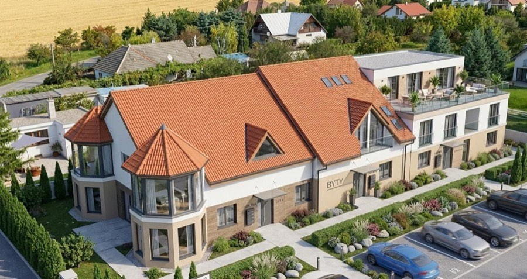
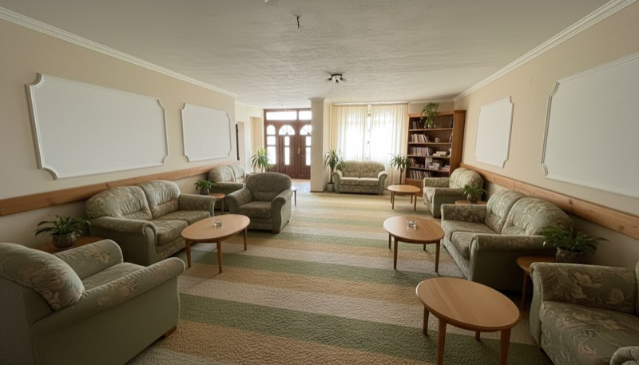
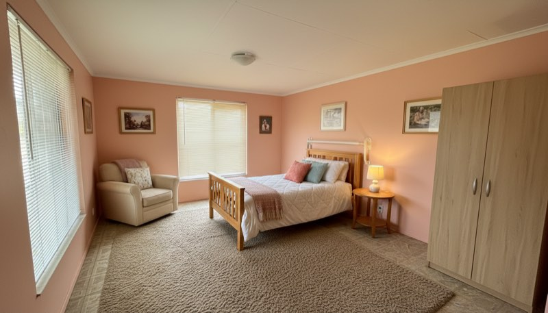
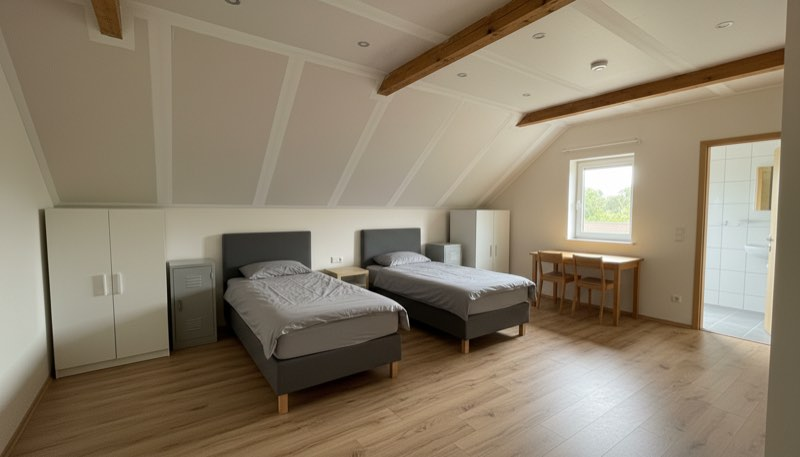
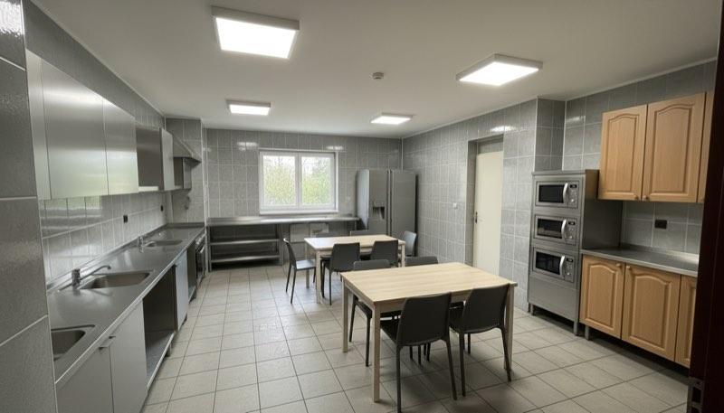

Osem smerov potenciálu. Jedna adresa.
Prízemie s reštauračnou halou a kuchyňou, poschodie s 5 izbami s vlastnými kúpeľňami, klimatizované podkrovie, parkovisko a predzáhradka s jazierkom. Vyberte si scenár — pri každom uvidíte vizualizáciu vytvorenú z reálnych fotografií objektu.
Gastro — otvorte prevádzku takmer okamžite
Prízemie tvorila plne vybavená reštaurácia: hala s kamenným barom, vstupná hala so schodiskom, priestranná kuchyňa so skladovými priestormi, sociálne zariadenia a kotolňa. Pred budovou je veľké parkovisko a predzáhradka s jazierkom — pripravená scéna pre letnú terasu.
- Reštauračná hala s kamenným barom + priestranná kuchyňa so skladmi
- Veľké parkovisko priamo pred budovou
- Predzáhradka s jazierkom — ideálna pre letnú terasu


Penzión & Wellness — nonstop dopyt priamo z R1
Prvé poschodie ponúka 5 samostatných izieb — každú s vlastnou kúpeľňou a WC — plus kanceláriu a otvorenú galériu s chodbou a výhľadom na prízemie. V podkroví je veľká klimatizovaná miestnosť s kúpeľňou a WC, ideálna ako apartmán alebo wellness zóna so saunou a relaxom.
- 5 izieb na poschodí, každá s vlastnou kúpeľňou a WC
- Priestor pre wellness so saunou — klimatizované podkrovie alebo prízemné zázemie
- Parkovisko pred budovou a reštauračné prízemie — všetko pod jednou strechou


Mezonetové byty — rezidenčný development
Dve podlažia s podkrovím a otvorenou galériou dávajú priestor na prestavbu na 5 štýlových mezonetových bytov. V zadnej časti pozemku sú navyše 2 rozostavané dvojpodlažné jednotky — pripravené rozšírenie developmentu.
- Izby na poschodí už dnes s vlastnými kúpeľňami — jednoduchšia prestavba
- 2 rozostavané dvojpodlažné jednotky v zadnej časti pozemku
- Parkovisko pre rezidentov priamo pred budovou


Svadobný salón & Eventy — priestor, ktorý predáva emóciu
Vstupná hala so schodiskom a otvorenou galériou vytvára prirodzene reprezentatívny nástup, predzáhradka s jazierkom je ako stvorená na obrady a fotenie. Dojazd do 30 minút z dvoch krajských miest znamená široký okruh klientely.
- Hala so schodiskom a otvorenou galériou — „wow“ efekt pri vstupe
- Predzáhradka s jazierkom na obrady a fotenie + parkovisko pre hostí
- 5 izieb s kúpeľňami na poschodí — ubytovanie svadobčanov


Showroom & Obchodný priestor — vitrína pri R1
Tisíce áut denne na ťahu Trnava — Nitra robia z objektu prirodzený showroom: nábytok, kuchyne, technika. Reštauračná hala na prízemí unesie expozíciu, kuchyňa a sklady poslúžia ako technické zázemie a na poschodí je kancelária s 5 samostatnými miestnosťami pre tím.
- Veľké parkovisko pred budovou pre zákazníkov aj zásobovanie
- Skladové priestory priamo na prízemí
- Kancelária a samostatné miestnosti na poschodí


Škôlka alebo Fitness — služby, ktoré v okolí chýbajú
Rastúce obce v okolí Serede potrebujú škôlky, fitness centrá aj ambulancie. Veľké miestnosti na prízemí, samostatné miestnosti s vlastnými kúpeľňami na poschodí a rovinatý pozemok s predzáhradkou tomu vychádzajú v ústrety.
- Veľké svetlé miestnosti s oknami do zelene
- Pozemok s priestorom pre ihrisko či vonkajšiu fit zónu + parkovisko
- Podlahové kúrenie — komfort pre deti aj športovcov


Dom sociálnych služieb — služba, po ktorej dopyt neustále rastie
Izby s vlastnými kúpeľňami a WC na poschodí ponúkajú klientom súkromie a komfort, spoločenské priestory na prízemí a predzáhradka s jazierkom zas pokojné prostredie. Dispozíciu možno rozdeliť na viac izieb podľa potreby. Rodiny ocenia dojazd z Trnavy aj Nitry do polhodiny.
- Izby s vlastnou kúpeľňou a WC + veľká podkrovná miestnosť
- Predzáhradka s jazierkom — pokojný oddych v zeleni
- Kapacity zariadení pre seniorov v regióne dlhodobo nestačia dopytu


Ubytovňa — stabilný výnos z dlhodobých nájmov
Priemyselné zóny v okolí Serede, Galanty a Nitry vytvárajú stály dopyt po ubytovaní pracovníkov. Izby s vlastnými kúpeľňami a WC na poschodí plus veľká klimatizovaná miestnosť v podkroví umožňujú spustiť prevádzku takmer okamžite — dispozíciu možno rozdeliť na viac lôžok.
- Každá izba s vlastnou kúpeľňou a WC — vyšší štandard ubytovne
- Priestranná kuchyňa so skladmi na prízemí ako spoločné zázemie
- Veľké parkovisko pre autá aj dodávky priamo pred budovou


Vizualizácie sú ilustračné — vytvorené na základe reálnych fotografií objektu. Nezobrazujú skutočný stav nehnuteľnosti.